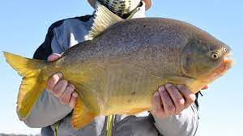
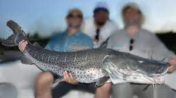
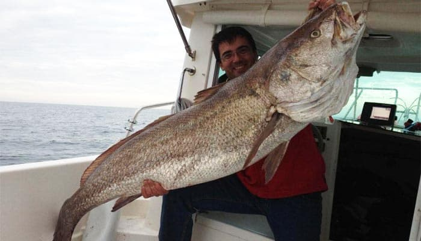
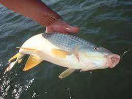

Sobre Nosotros
Somos una empresa familiar que nos dedicamos a las excursiones,torneos de pescar,las mismas son enbarcado o costeras. Brindamos un excelente pasar a nuestros clientes, para que se cientan como en su casa.. Las excursiones son todo el año. Nuestros clientes tienen grandes descuentos en excursiones y equipamientos de pescas. No te quedes afuera de esta Gran comunidad …. TE esperamos ...
Crear UsuarioExcursiones
Pesca Del Dorado
durante el feriado del 17 de Agosto tiene lugar la Fiesta Nacional del Dorado en Paso de la Patria, Corrientes. la mejor época para pescar dorado suele ser en los meses de primavera y verano, que van desde septiembre hasta marzo. Durante estos meses, el agua se encuentra en una temperatura adecuada para el dorado y las condiciones climáticas son ideales para la pesca. Sin embargo, es importante tener en cuenta que el dorado puede ser pescado en todas las estaciones del año, y que su mejor momento para pescar dependerá de las condiciones específicas de cada río o arroyo.
Pesca Del Pacu
En Argentina, los lugares más populares para pescar pacú son el río Paraná, el río Uruguay, el río Bermejo y el río Pilcomayo. También se pueden encontrar en algunas lagunas y embalses. La Fiesta Nacional del Pacú es una emblemática festividad que se realiza anualmente en la ciudad de Esquina, Corrientes. El evento principal es una competencia de pesca deportiva embarcada sobre las aguas del Rio Paraná y del Rio Corrientes, que tiene como especie exclusiva al Pacú, pez de alto valor deportivo. En la fecha del mes de febrero El pacú se puede pescar durante todo el año, pero hay épocas en las que es más activo y más fácil de capturar. La mejor temporada para pescar pacú en Argentina es de noviembre a marzo, cuando la temperatura del agua es cálida y los frutos y semillas están más disponibles para ellos.
Pesca del Surubi
En su visita y recorrida por la ciudad de Goya, el ex Presidente Mauricio Macri invitó a participar y vivir la 46° Fiesta Nacional del Surubí que se desarrollará del 24 al 30 de abril 2023 en la segunda ciudad de la provincia de Corrientes. Del 16 de Marzo al 14 de Agosto pescadores de todo el país llegan a la ciudad para buscar al Gran Pez. Estamos en la mejor época para salir a buscar a esta combativa especie: el surubí.
Pesca De La Corvina
La temporada de pesca en aguas salvajes arranca a finales del verano, siendo septiembre y octubre los meses habitualmente más apreciados por los profesionales para sacarle partido en fresco. Mar de Ajó se prepara para la 53ª Fiesta de la Corvina Rubia y Promoción Turística, donde se podrá disfrutar de espectáculos, patio de comidas, desfile institucional, concurso de pesca y una variedad de actividades para disfrutar en familia. El evento que cada año convoca a vecinos de todo el Partido de La Costa también espera recibir una importante cantidad de visitantes ya que se desarrollará durante este fin de semana largo con la apertura el viernes 18 y el gran cierre el lunes 21 de noviembre con la presentación de la consagrada banda Turf.
Pesca Variada
La pesca variada es todo el año…
Pesca Del Pejerrey

Los meses de pesca varían de mayo a fines de agosto, siendo junio y julio los meses de mayor actividad.
productos
CAÑA DE PESCAR

Caracteristicas
CAÑA DE PESCA PARA ENBARCADO

REELPARA PEJERREY

Descripción:
- 3 ulemanes.
- Cuerpo y carretel de grafito
- Manija plegable e intercambiable.
- capacidad del nylon:0.25-115/0.30-100 mm/m
REEL VARIADO

Descripción:
- Cuerpo de grafito.
- Carretel de grafito adicional.
- Freno delantero.
- Manivela reversible.
- Rotor simetrico para minimizar la vibreción.
- Capacidad del nylon:0.45/195-0.60/110 mm/m
REEL VARIADA ROTATIVO

descripcion:
- Apto para multifilamento
- Idel pesca variada
- 3 rulemanes
- Freno progresivo y Magnético
- Maniveka goma antideslizante
- tipo de nylon: 0.23/180-0.25/200-0.30/120 mm/m


LINEA DE PESCA VARIADA

Descripciòn
- nylon de 0.50
- 2 Anzuelo para variada
- 1 Mosqueton
- 2 Rotores
- 4 Bolillas
COMBO DE PESCA

Descripciòn:
- Caña telescopica 2 mts
- Reel Fontal
- Estuche
- kit de señuelos
- Carretel de nylon
- kit Anzuelos
- kit bollas
- kit plomadas